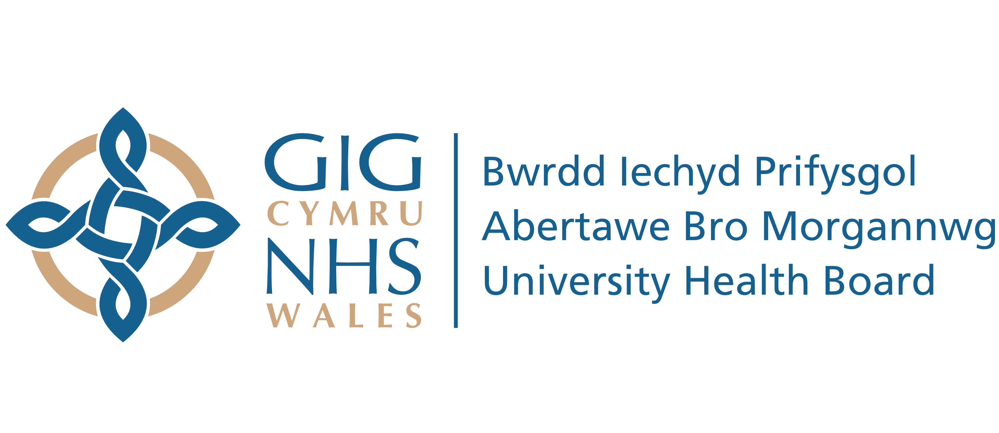
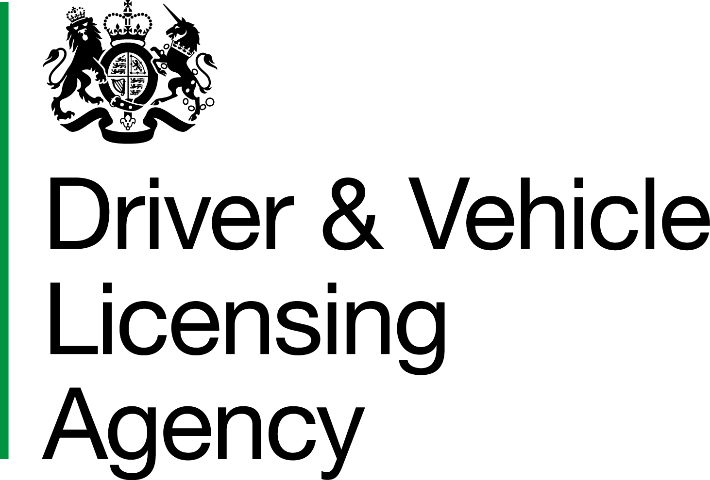
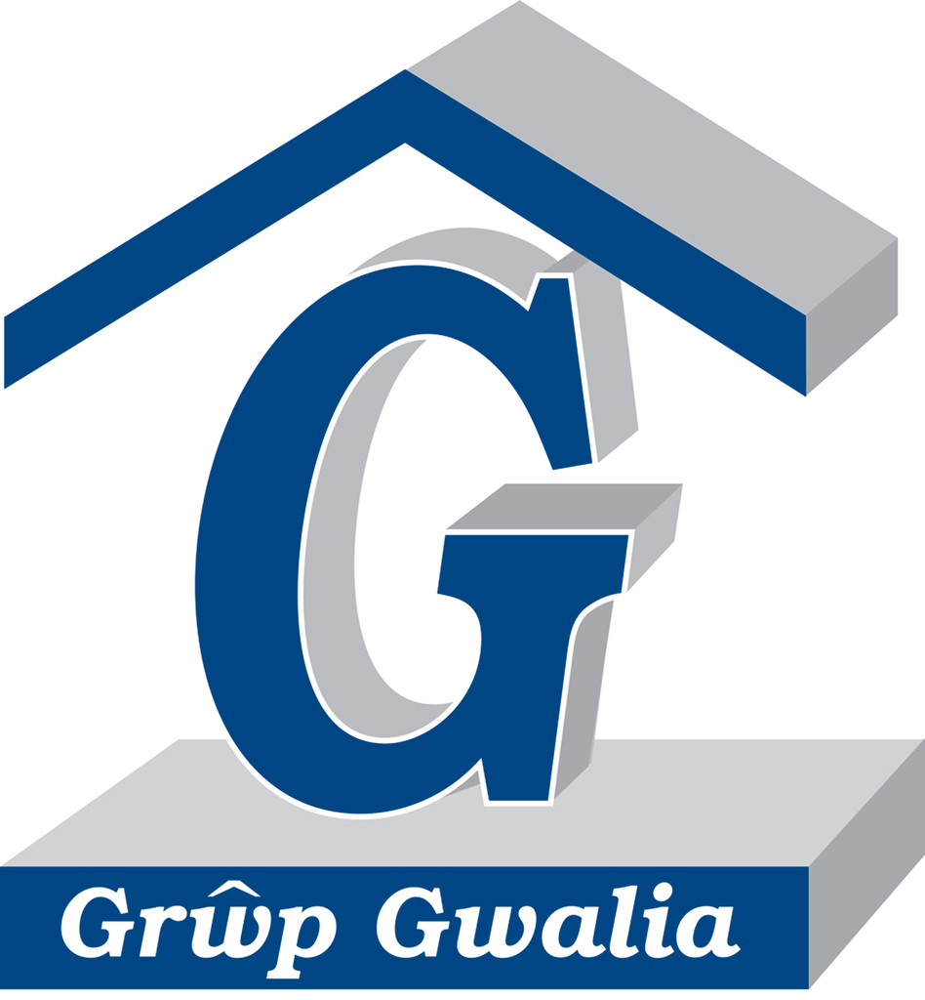
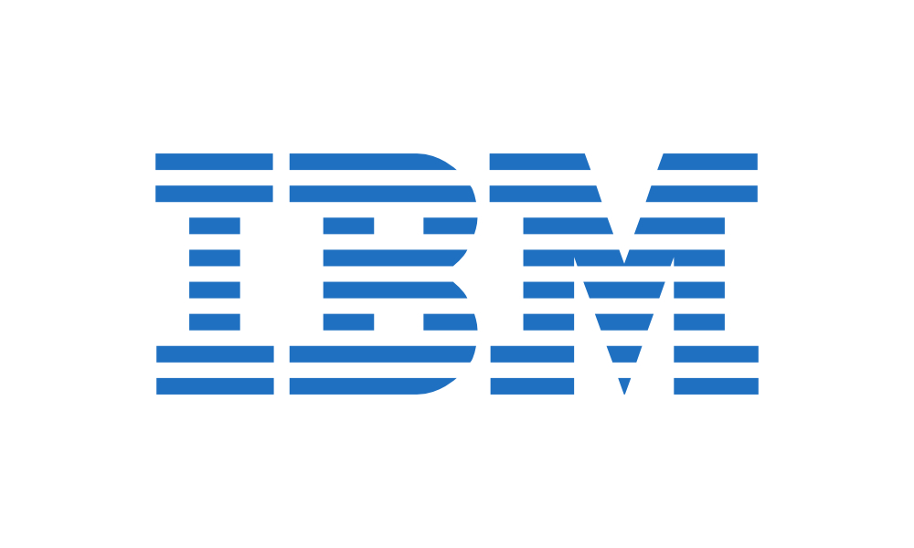
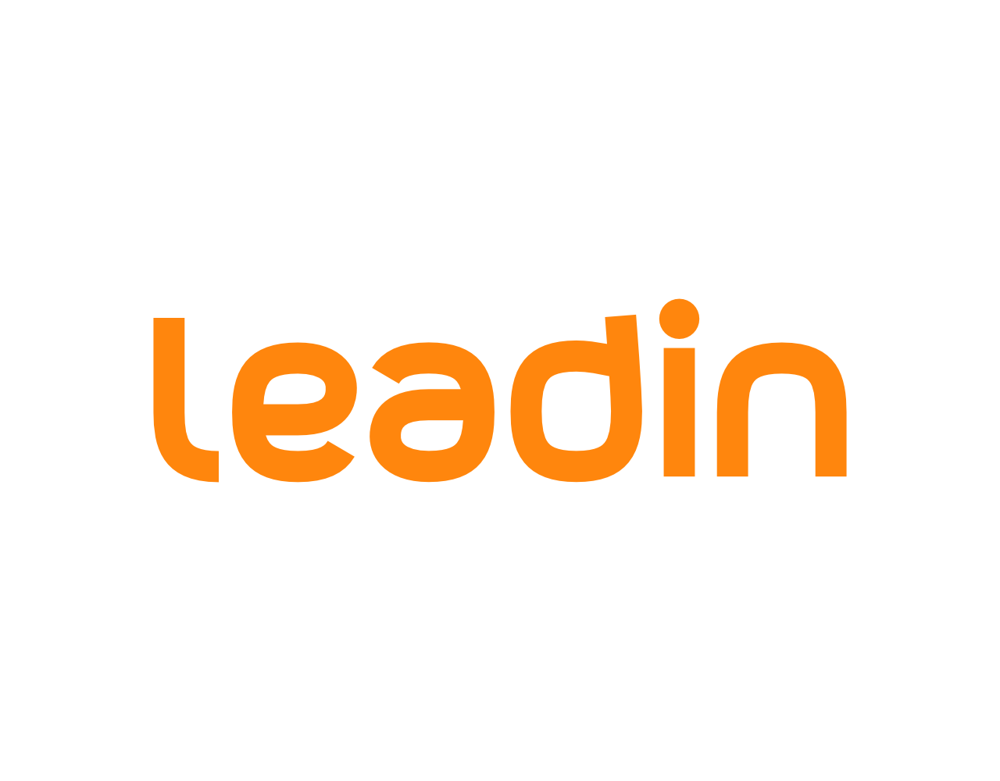

Abertawe Bro Morgannwg University Health Board (ABMU) is one of the largest healthcare organisations in the UK, ABMU is responsible for the health and wellbeing of 550,000 citizens living in South Wales. As an integrated Health Board we commission and provide primary and community care as well as hospital care, mental health and learning disability services. Like all NHS organisations we are facing the challenges of older patients with increasingly complex needs, new technologies and interventions, greater expectations and workforce challenges. To remain able to deliver high quality care we must transform how we offer services in partnership with our patients, using digital technologies to deliver care differently and better, in or near people’s homes and communities.

Accelero's approach to development is to work from a design in our EnGenero product and to generate as much of the system as possible. Where generation is not feasible, programmers can write these components and integrate into the generated code via the tool. Our approach is heavily geared towards ensuring that the whole system is described in the model, whether this is the internal data structure, links to external systems via a number of connector types, definition of data entry screens or integration with binary components. The design then becomes a living specification of the system from the perspective of the meta-structures and interactions.

BBC Research & Development has research interests in understanding new interaction technologies and the use of data and information across the new digital landscapes of broadcasting in ways that protect the communities with which they engage. The organisation is keen to share wisdom across the industries participating in the CHERISH-DE Centre, for example understanding approaches to precision data management in healthcare, broadcasting and other social contexts.

Blurrt tracks and analyses reaction on social media for a range of clients including broadcasters, agencies and brands. Their super-fast data processing capabilities make it possible to collect and analyse thousands of tweets a second and they display this data through an elegant and easy to use platform. Blurrt's natural language processing system can analyse social media text for both sentiment and emotion, which offers a more multidimensional look at social media reaction.

The DVLA are an executive agency of the Department for Transport and part of the Motoring Services Group. We are responsible for maintaining over 45 million driver records and over 38 million active vehicle records, as well as collecting around £6 billion a year in vehicle tax, limiting evasion to less than 1% a year. We already use this information to help us improve road safety, reduce vehicle-related crime, support environmental initiatives and limit vehicle tax evasion.
Fram3 make content, websites and software applications more accessible to people with disabilities. The digital divide in the UK is such that - 1/3 of the disabled population has never been online. With the changing nature of the service delivery (online), there is a fear that disabled people will be left behind and forgotten. We want to ensure that disabled people are empowered to become independent and integrated members of society. By being independent, impartial and platform agnostic, we can provide the most efficient and cost effective advice, support and training for disabled people;and for those, who support disabled people.

GPC are a highly innovative company with a successful background in healthcare analytics. More recently our patented technology has allowed us to expand into other domains including policing, telecommunications, local government and pharmaceutical. Our strength lies in our ability to better utilise consumer technology and is demonstrated by the application of 3D cameras for wound care.

Grwp Gwalia is one of Wales’ largest 3rd sector Housing and Care providers with roperties for people on low incomes, and those vulnerably housed. Gwalia has a large property portfolio of supported housing for people with a very broad range of needs including learning disabilities, mental health and physical needs. We also have a large student accommodation portfolio across universities in SW Wales. In addition, Gwalia operates a significant Care division, with a range of Extra Care, Sheltered Accommodation and Residential and Nursing Care Homes for frail elderly people and those with dementia.

IBM Research (India) is a long-established research partner on novel interface and interaction technologies with a particular focus on resource constrained communities. The organisation has helped to shape the Centre’s research themes, particularly in terms of assistive technologies to aid older people, technologies to bridge the digital divide, and digital security. IBM is also interested in questions of how social influence can empower communities to deal with the digital revolution.

leadin is a User Research and Service Production agency. The company creates value from user insight for the benefit of its clients. Leadin production crew has the skills to capitalise digitalisation – user researchers, business consultants, service and UI/UX designers, system and software architects, front-end developers as well as quality assurance experts.
Microsoft Research ltd (UK) and the Technology for Emerging Markets Group at Microsoft Research Lab (India) collaborate with Swansea in the field of technologies for resource constrained communities, with the aim of building and testing systems and devices for underserved rural and urban communities. The company will host researchers and internships, and is facilitating access to its new Catalyst Centre for Sustainable Development, which provides space for researchers to engage with international research users and policy makers.

Protect 2020 Protect 2020 is a global cyber security specialist that offers a range of comprehensive solutions. We help businesses and other organisations to learn, understand and protect themselves from current and emerging cyber threats, bringing a wealth of knowledge, experience and expertise. Protect 2020 provides new and leading edge security technologies, cyber security awareness training services and a highly experienced threat and attack investigations.

The Regional Cyber Crime Unit (RCCU) tackles those responsible for the most serious incidents of computer intrusion, distribution of malicious code, and denial of service attack. The Unit, working closely with the National Cyber Crime Unit (NCCU), provides a national investigative response to the most serious incidents of cyber-crime. The Unit are also working collaboratively with Welsh Government with the aim of developing a ‘secure digital nation’. Current information available suggests that 80% of Cyber crime is preventable and it is our intention through partnership engagement and education to develop Wales as a safe place to live, visit and do business.

Symlconnect develops customised software solutions working in collaboration with clinical specialists, academics and users. We specialise in supporting customised integrated care solutions aimed at reducing clinical time wastage by equipping clinicians with appropriate information at-the-point-of-care for a better informed decision making. Our unique modular and secured framework is standards based, and available both on offline & online, for use within primary, secondary and community care. The smart mobile solutions combined with the business intelligence is focussed to improve the cost efficiency and quality of care giving anywhere anytime to improve the digital economy of the various healthcare organisations.

TechHub is a unique environment where technology startups can start up faster. We nurture an international network of like-minded and focused tech entrepreneurs, providing places where they can work, meet, collaborate, network, learn and have fun. By getting the right people together in a physical space, good things happen.

WePredict turn big data and small data into actionable insights for some of the world's largest companies. Our team of mathematicians, statisticians and computer scientists use the latest tools and techniques to deliver results that can be easily understood by everyone. Making the most of the data that every industry possesses is shifting from being important to being mandatory. Our approach releases the business value that's locked within business data.